Sirius supports the definition of sophisticated graphical modelers, with support for many features like filters, layers, drag’n’drop, complex styling etc.
Diagrams support several kinds of graphical constructs: simple nodes, containers (which can contain other nodes or containers), lists, bordered nodes (nodes which appear on the side of other elements, typically to represent ports), and edges between all of these. Each kind of element supports a rich set of possible styles (shape and color).
As the specifier of Sirius diagrams, you have total control on how the elements in your semantic models are represented using the constructs provided by Sirius, and how they behave. In particular, this means the structure of the graphical elements shown on a diagram (which element contains which, how they are connected) does not have to match the «physical» structure of the semantic model being represented. The two are completely de-correlated, and you can choose to represent your semantic models in ways which make sense from various point of views.
Diagrams are configured by creating a Diagram Description element (inside a Viewpoint) and its sub-elements (which describe the layers, graphical elements and tools).
Like many elements inside a VSM , Diagram Description have a mandatory Id, which should be unique and stable across revisions of the diagram specification, and an optional Label which is used for presentation purpose (i.e. it is the name visible to end-users). If no Label is specified, the Id is used for presentation. Note that changing the Id will break existing diagrams which were created using the previous version; changing the Label is safe.
The mandatory
Domain Class attribute is the type of semantic element which are represented by the diagram. In the
Model Explorer, end-users will be able to create new instances of this diagram on semantic elements of this type (assuming the corresponding viewpoint is enabled in the
Modeling Project). The syntax for the domain class name can be the basic name, like
Package, a qualified name using name of the EMF EPackage which defines the type, like
uml.Package, or a fully qualified URI like
http://www.eclipse.org/uml2/3.0.0/UML#//Package.
By default, new diagrams can be created on
any instance of the
Domain Class. You can use the
Precondition Expression to change this. If such an expression is specified, it will be evaluated in the context of the semantic element the user has selected, and only if the expression returns
true will the user be able to create a new diagram on this element.
The default title for newly created diagram can be specified using the
Title expression (
Advanced category), which is evaluated in the context of the semantic element on which the diagram is created, and should return a string. If the expression is not specified, the default title is the label of the diagram description (of its
Id if no
Label is set) prefixed with the string
"new " (e.g.
new Package Contents).
It is recommended that the Diagram Description be explicitly associated with the meta-model(s) of the semantic elements it will represent. You can add referenced meta-models from different sources in the Metamodels property section of the Diagram Description. Sirius will work even without this association, but setting it explicitly will give you better feedback when validating your VSM .
The Initialization and Show on startup flags control whether diagram instances are created and/or opened automatically without user intervention. If Initialization is set, then when the viewpoint which contains this diagram description is enabled, instances of this diagram description will be automatically created on all compatible semantic elements. If Show on startup in set, then when a modeling project is opened which contains instances of this diagram description, they will be opened: if only one such representation exist, it will be opened automatically; if there are more than one, a dialog box will appear to allow the user to select which one(s) to open. WARNING: Then Initialization flag can have a negative impact on performance: if it is set on a given diagram, then when the user enables the viewpoint which defines this diagram Sirius will attempt to find all possible elements in the semantic model on which it may be possible to create such a diagram. This can take a long time on big semantic models.
If Enable Popup Bars flag is set, then when the end-user leaves the mouse pointer still on a diagram (or diagram element) for a small time, a popup bar will appear with shortcut buttons to all the tools which can be applied in this context. It can be useful to create elements without going to the palette to select tools, but it can also become visually distracting if too many tools are available in the popup bar.
The Reused Mappings and Reused Tools properties in the Imports category are depreciated. They should not be used for new diagram descriptions. If you have existing diagram descriptions which use these features (or which contained mappings directly inside the Diagram Description), these should be moved inside the Default Layer of the diagram instead.
The content of the Diagram Description is mostly made of graphical elements mappings, organized in layers, and their associated tools. In addition, it can also contain validation rules, filters and layout configuration information.
Sirius provides a default algorithm to perform an automatic layout of all the graphical elements on a diagram (excluding pinned elements ). If the default algorithm does not fit your needs, you can configure some parameters or request for alternate algorithms (currently only one) directly inside the VSM.
The
Composite Layout enables one to specify the
padding between elements and the
direction for the default algorithm.
The Ordered Tree Layout enables one to lay out nodes as an ordered tree. The manner to retrieve children for each node should be specified.
NOTE: these layout algorithms manage only nodes connected by edges, other nodes are layouted from left to right as usual.
If you need to go beyond that, you can provide your own layout algorithm programmatically (see the developer documentation for details).
This section describes how to specify the graphical elements which should appear on your diagram, and how to organize them.
All the graphical elements and tools on a Sirius diagram are part of a Layer. Every diagram must have a default layer, which is always enabled, and zero or more additional layers that the end-user can enable or disable following the optional flag value. Note that the default layer is created at diagram creation. When a layer is enabled, all the graphical elements and tools it defines are also enabled.
The elements which are defined in different layers can interact and reference themselves. For example, it is possible to define a type of edge (connection) between elements which are defined in different layers; the edges will only be visible if all the concerned layers are enabled: the ones which define the source graphical element, the one for the target graphical element, and the one for the edge itself.
Layers are defined directly inside the Diagram Description element. You must have exactly one Default Layer (whose name does not matter), and as many Additional Layers as you need.
The Label (or Id if not label is set) of an optional layer is used in the drop-down menu available to users in the diagram’s tabbar, from which they can enable or disable them. Mandatory layers are not visible in this menu. The Layers can contain graphical elements and tools definitions (as described below), but they can also reuse tools and mappings (graphical elements definitions) which are defined in other layers using the Reused Tools and Reused Mappings in the Advanced category. If a layer L1 reuses elements defined in another layer L2, these elements will be enabled whenever L1 is enabled, even if L2 is not. However if both L1 and L2 are enabled, the elements are enabled only once (i.e. graphical elements do not appear once for L1 and once for L2).
This section describes the different kinds of graphical elements supported on Sirius diagrams and the general principle of how they are specified inside the VSM, through the notion of mapping.
Graphical Vocabulary. Sirius diagrams can contain several different types of graphical elements, which are described inside the Layer elements. These are:
| 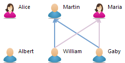 | 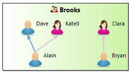 | 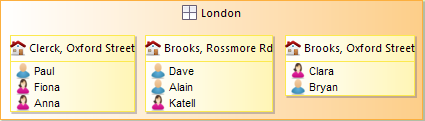 | 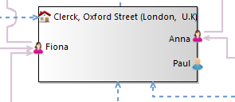 |
| Nodes | Containers | List Containers | BorderedNodes |
|---|
Mappings. All these graphical elements are described using the concept of a mapping (for example a Node mapping to describe a kind of nodes). A mapping is an element defined inside the VSM which identifies a sub-set of the elements in the semantic model and associates a graphical representation to them: it maps semantic elements onto some graphical notation. At runtime, each active mapping (i.e. defined in a layer which is enabled) will produce zero or more graphical elements on the diagram, depending on how many semantic elements currently match the mapping’s definition. In the default functioning mode, whenever the semantic model changes Sirius will automatically re-compute which graphical elements should appear on the diagram according to the active mappings, and create or remove the necessary elements.
You can think of the set of mappings defined in a diagram as a description of how to project the concepts in your semantic model onto the graphical language provided by Sirius (nodes, containers, edges...) according to the viewpoint you want the diagram to represent.
Mapping Definition. The mapping descriptions for all the different types of graphical elements share the same common principles:
Each mapping is defined in a context in the VSM: either directly inside a layer or inside another mapping. At runtime, the corresponding context element would be (respectively) either the target semantic element of the diagram itself, or the target of an instance of the parent mapping. This context element is used as a starting point to determine which instances of a mapping should be created on the diagram:
This order of evaluation should be kept in mind when specifying diagrams. In particular, to avoid performance issues you should:
Associated Semantic Elements. To associate more semantic elements to a graphical element than just its semantic target, you can specify the Associated Elements Expression (in the Advanced category). It will be evaluated for each instance of the mapping in the context of the semantic target, and should return a set of semantic elements. These will be visible to the end-user in the Properties view when the graphical element is selected, and any change on one of these elements will trigger a refresh of the graphical element. This means that if you use properties of other elements than the target to compute an element’s label or conditional style (for example), you should make sure that these other elements appear in the Associated Elements, otherwise the label or style will not be properly refreshed when the elements are modified.
Synchronization. All mappings have a Synchronization parameter (in the Advanced category) which controls when instances of the mapping are created on the diagram. The possible values are:
Mapping Imports. A mapping import is a feature which can be used to specialize (modify) a mapping defined somewhere else (in an other layer, an other graphical representation or an other viewpoint). It is available for Nodes, Containers and Edges. Although it can be used in normal diagram descriptions, its main use case is when defining diagram extensions, so mapping imports are describe in their own section.
A Node mapping is used to represent model elements graphically as atomic elements, i.e. elements which can not contain other elements. Node mappings can appear directly inside a layer description, in which case the node will appear directly on the diagram, or inside another element (for example a container). A node mapping which is defined inside another element can be either a sub-node mapping, in which case it will appear inside its parent (which must be a container), or a bordered node mapping, in which case it will appear on the border of its parent (which may be a container or a node, including another bordered node). Bordered node mappings are useful to represent ports.
| Nodes on a diagram | Nodes in container | Nodes in containers displayed as lists | Nodes on borders |
|---|
The definition of a node mapping follows the general rules described above to determine the semantic elements for which a node should be created. All the properties available in the Behavior category of the Node mapping configuration allow you to see all the various tools, defined elsewhere in the VSM, which apply to this mapping.
A node can not contain sub-nodes, but it can have bordered nodes, which are defined inside the node mapping ( New Diagram Element > Bordered Node). You can also reuse node mappings defined elsewhere in the VSM using the Reused Bordered Node Mappings property in the Import category. The effect at runtime is the same as if you had created an equivalent Bordered Node mapping inside the node mapping.
See the styles section for a general presentation of how styles are defined, including conditional styles. This section only presents the aspects which are specific to nodes.
For nodes you can use the following styles:
org.eclipse.sirius.diagram.ui.styleConfigurationProvider extension point.
| 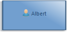 | 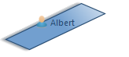 | 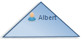 | 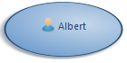 | 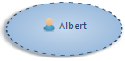 |
| Basic Shape Square | Basic Shape Stroke | Basic Shape Triangle | Basic Shape Dot | Basic Shape Ring |
|---|
| 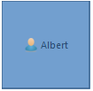 |
|
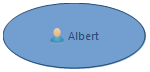 | 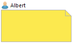 | 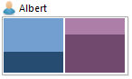 | 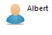 | 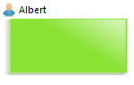 |
| Square | Diamond | Ellipse | Note | Gauge | Image | Custom |
|---|
Most of the properties used to configure the various styles are self-explanatory. See the styles section below for a general discussion. You can also refer to the tool-tips available directly in the editor on the «question mark» icon of each property.
Gauge Style. The gauge style is more complex than the others and deserves a specific description. It is used to represent nodes as a (set of) gauges, which can be used for example as progress indicators.

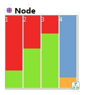
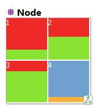
In addition to the standard style properties for the label, size and colors, gauges have an Alignment attribute (in the Advanced category) which indicates how the individual gauges are layed out:
VERTICAL The gauges are aligned vertically, from top to bottom.
HORIZONTAL The gauges are aligned horizontally, from left to right.
SQUARE The gauges are aligned in a square, which may not be complete. Gauges are added from left to right in lines, and lines added from top to bottom.
You can specify the gauge composite’s border color using a color sub-element,
which can be any of:
Gauge composites need one or more Gauge Section, which represent an individual gauge. Each Gauge Section has a Label, a Min and a Max Value Expression, and a Value Expression. The size of the gauge section depends on where the Value Expression sits between the Min (the section is invisible) and the Max (the section occupies all the available space). You can specify each gauge section’s foreground and background colors using color sub-elements. Interpolated colors are particularly suited for gauge sections.
See the tools section for a general presentation of how tools are defined. This section only presents tools which are specific to nodes.
Node Creation. The only type of tool which is really specific to node mappings is the Node Creation tool, used to create new nodes. These work like all the other creation tools. You simply specify the Node Mappings that this tool can create and specify the behavior of the tool inside the Begin element using all the standard model operations.
By default, your node creation tools will be available on all the graphical elements which can contain an instance of the Node Mappings you specified in the tool, and users will see a «forbidden» sign if they try to apply the tool on an incompatible type of element. You can specify a Precondition to forbid the application of the tool on some of the elements where it would normally be allowed. The precondition is evaluated in the context of the view element on which the user has put the mouse. If it returns a false value, the tool’s application will be forbidden. Symmetrically, you can specify Extra Mappings ( Advanced section) on which the tool should be applicable, even though these mapping can not contain nodes of the type you will create. In this case, the node created by the tool will actually appear elsewhere on the diagram, but it can often help usability to allow users to click on related elements.
A Container mapping is used to represent model elements graphically as containers, which can contain sub-elements (including other containers, recursively). A container can also have bordered nodes, which are like normal nodes but appear on the border of the container, for example to represent ports. Container mappings can appear directly inside a layer description, in which case the container will appear directly on the diagram, or inside another container mapping.
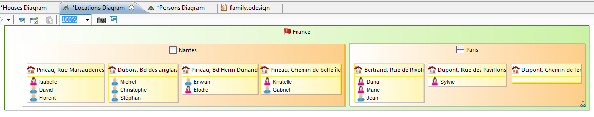
The definition of a container mapping follows the general rules described above to determine the semantic elements for which a container should be created. All the properties available in the Behavior category of the Container mapping configuration allow you to see all the various tools, defined elsewhere in the VSM, which apply to this mapping.
A container can contain sub-containers, sub-nodes, and bordered nodes, all of which are defined inside the container mapping ( New Diagram Element > Container, Sub-node and Bordered Node, respectively). You can also reuse node and container mappings defined elsewhere in the VSM in any of these three roles using the corresponding Reused X Mappings properties in the Import category. The effect at runtime is the same as if you had created an equivalent mappings inside the container mapping.
List Containers You can enable a special «list mode» for containers by setting the Children Presentation attribute to List in the mapping configuration. List containers are represented in a special way, in which only the labels of their direct sub-elements (nodes only) are taken into account and presented in a vertical list. When represented as a list, only some of the style attributes (label text, tool-tip, colors) of the container are taken into account. For the list items themselves, only the label text is used.
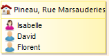
Compartments You can enable a special «compartment mode» for containers by setting the Children Presentation attribute to Horizontal Stack or Vertical Stack in the mapping configuration. Region containers presents their children containers and lists as compartments, vertically or horizontally organized. They are sorted following the mapping order and the semantic candidates expression evaluation result of each mapping. The border style attributes of the Region’s styles are used to specify the compartments separators. The other style properties of Region container or Region mapping are used as usual.
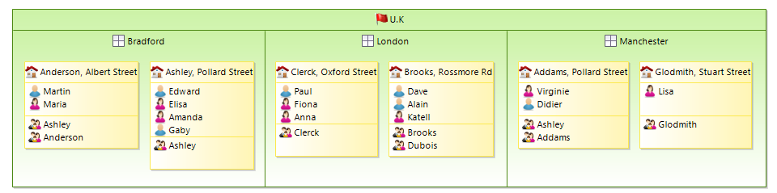
Warning: The compartment feature has been introduced in Sirius 3.0.0. While working reliably, it has some limitations but you can rely on the improved VSM validation to ensure you are using it in supported modes. Known limitations:
See the styles section for a general presentation of how styles are defined, including conditional styles. This section only presents the aspects which are specific to containers.
For containers you can use the following styles:
| 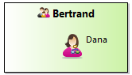 | 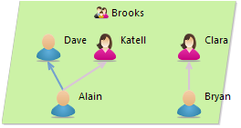 | 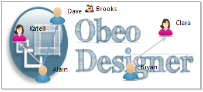 |
| Gradient | Parallelogram | Image |
|---|
You can specify the default size of Gradient and Parallelogram styles at creation time by specifying the width and height computation expressions available in the Advanced tab. This default size will also be used to determine the container minimum size when its bounds are auto-sized.
Most of the properties used to configure the various styles are self-explanatory. See the styles section below for a general discussion. You can also refer to the tool-tips available directly in the editor on the «question mark» icon of each property.
See the tools section for a general presentation of how tools are defined. This section only presents tools which are specific to containers.
Container Creation. These tools are used to create new containers. They work like all the other creation tools. You simply specify the Container Mappings that this tool can create and specify the behavior of the tool inside the Begin element using all the standard model operations.
By default, your container creation tools will be available on all the graphical elements which can contain an instance of the Container Mappings you specified in the tool, and users will see a «forbidden» sign if they try to apply the tool on an incompatible type of element. You can specify a Precondition to forbid the application of the tool on some of the elements where it would normally be allowed. The precondition is evaluated in the context of the view element on which the user has put the mouse. If it returns a false value, the tool’s application will be forbidden. Symmetrically, you can specify Extra Mappings ( Advanced section) on which the tool should be applicable, even though these mapping can not contain containers of the type you will create. In this case, the container created by the tool will actually appear elsewhere on the diagram, but it can often help usability to allow users to click on related elements.
Container Drop You can associate a Container Drop description to your container mappings to react to drag’n’drop operations into the container. The Drag Source property indicates if you want to react to graphical elements from a diagram, to semantic model elements dragged from another Eclipse view (for example from the Model Explorer), or both. The Containers property indicates for which drop kind of container mappings this tool applies. The Mappings property indicates what kinds of graphical elements can be dropped into the specified containers, when the Drag Source is Diagram or Both. The body of the tool (the model operations ) specify how to react when an element is dropped into a container.
WARNING: if you choose
Model or
Both as source, your tool must be prepared to accept any type of source element which can be present in the
Model Explorer view, including elements which have no relation to the source mappings you specified for the tool. Use a precondition to check the nature of the element being dragged (available through the
element variable) to disable the tool source elements your tool does not support.
When drag and dropping workspace resources (files, folders...) from an Eclipse view, some conversions are performed to ease the operations specifications. Depending of the dropped resource, the
element variable content in the root operation will be different:
element variable value.
DFile instance will be created and set as
element variable value.
DFolder instance will be created and set as
element variable value. For each resource contained by the folder, a
DResource instance will be created.
DProject instance will be created and set as
element variable value. For each resource contained by the folder, a
DResource instance will be created.
DFile,
DFolder,
DProject are instances of
DResource. A
DResource instance has a
name and a
path. The path is the absolute location of the resource.
DFolder,
DProject are instances of
DResourceContainer. A
DResourceContainer instance has
members, which are
DResource instances.
Bordered nodes are specified using normal node mappings. They can appear inside node mappings (include other node mappings which are bordered nodes) and container mappings. They can have the same styles and tools associated to them as normal node mappings (although they should generally be kept small to avoid weird graphical effects).
Edges are used to define connections between diagram elements. There are two kinds of edges, which are defined using different mappings:
To specify a Relation-Based Edge, you must fill the Source Mapping and Target Mapping properties. They indicate from what kind of graphical element the edges will start and to what kind of element they go. Both properties can contain several mappings, and some mappings can appear as both source and targets. Note that it is possible to have edges whose source or target is another edge, but not both.
You must also specify the Target Finder Expression. It will be evaluated in the context of the semantic target element of a potential source (as defined by Source Mappings) and should return the semantic element(s) of the targets elements to connect with the source. The expression can return zero elements to indicate that no edge starting from this element.
An edge (instance of this mapping) will appear between each pair of graphical elements E1 and E2 on the diagram where:
Because a relation-based edge does not represent an actual semantic element but a relation between elements, its own semantic element is the same as its source’s.
Paths. Edges only exist between one source and one target element. Sometimes such an edge is just one segment of a more complex path which traverses many elements. You can highlight such a complex path using the properties in the Path category. Path Mappings should be the list of mappings considered by the path, and the Path Expression should return the list of semantic elements the edge path should go through, in the order the should be traversed.
Element-Based Edges are configured much like nodes and containers. You must specify the Domain Class, Semantic Candidate Expression and (optionally) Precondition Expression to select the semantic elements the edges will represent. In addition, you must specify:
An edge (instance of this mapping) will appear between each pair of graphical elements E1 and E2 on the diagram where:
Paths. Edges only exist between one source and one target element. Sometimes such an edge is just one segment of a more complex path which traverses many elements. You can highlight such a complex path using the properties in the Path category. Path Mappings should be the list of mappings considered by the path, and the Path Expression should return the list of semantic elements the edge path should go through, in the order the should be traversed.
Both types of edges (relation-based and element-based) share the same style type. It supports conditional style like for other mappings.
You can specify the line style ( solid, dash, dot or dash-dot), color, width (using the Size Computation Expression in the Advanced Category), and optional decorations (like arrowheads) to be put on the end-points of the edge.
The Routing Style can be one of:
| 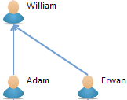 | 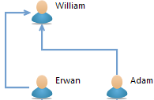 | 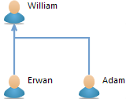 |
| Straight | Manhattan | Tree |
|---|
Note that end-users can change the routing style of the edges individually, independently of the default style you set in the VSM.
Edge Labels. Edges can have from zero to three labels. By default they have a single which will be placed at its center. You can delete it and/or add labels to be shown at the beginning (near the source) or end (near the target) of the edge. In all cases, the configuration is the same as for all labels. Note that currently only the center label (if present) is editable if a Direct Edit tool is associated to the edge mapping.
Edge Folding. It can often be useful, from one end of the edge, to be able to hide the elements at the other end. Think for example when and edge is used to represent some kind of containment relationship between elements and you want to hide the «contents» of an element to concentrate on the rest of the diagram. You can allow end-users to do this be setting a Folding Style on an edge mapping (in the Advanced category). When the Folding Style is set to Source or Target, the element (node or container) at the source or target of the edge will have a small « - » sign in its top-left corner. If the user clicks on it, the edges instance of this mapping for which the element is a source (resp. target) will fold: the edges and the elements they are connected to at the other side will disappear from view. The behavior is recursive: if the elements hidden were connected to other elements using this kind edges, those too will be hidden. When an element has been folded, the « - » sign becomes a « + » sign which can be used to unfold the edges. This is useful when representing trees of elements: if you enable folding, users will be able with a single click to hide or reveal complete sub-hierarchies of elements.
Edge Centering. The edge source and edge target are not systematically oriented toward the center of the node, depending on where the edge has been created or moved by the end user. You can specify that an edge end (the source, target or both) will always be centered. The Centered Source Mappings and the Centered Target Mappings (within the edge style description advanced properties tab) lets you select for which mapping the source or the target will be centered. The Ends Centering section (on the same advanced tab) allows you to generalize this behavior for any edge source/target mapping. Note that this behavior can be customized by the end user via the edge style centered attribute.
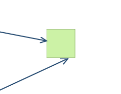
The first edge, the highest one, is oriented to the node’s center
The bracket edge figure is designed to be drawn from the middle of a node side to the middle of another node side.The user can move the main segment and rotate the figure (horizontal-> vertical or vertical->horizontal).

The optional decorations (like arrowheads) will be put on the end-points of the main segment.
See the Edge Style section for the other properties.
See the tools section for a general presentation of how tools are defined. This section only presents tools which are specific to edges.
Edge Creation. This tool is used to create new edges. They work like all the other creation tools. You simply specify the Edge Mappings that this tool can create and specify the behavior of the tool inside the Begin element using all the standard model operations.
Because edges have two ends, their creation requires users to specify both the source and target elements. By default, the possible sources are all the instances of one of the Source Mappings specified for this kind of edge (and similarly for the possible targets). You can restrict this using the Connection Start Precondition (resp. Connection Complete Precondition) to forbid the use of the tool from (resp. to) some element.
Connection Start Precondition expressions can use the following variables to allow/disallow first click for connection creation:
preSourceView: the graphical element which is pointed on the first click.
preSource: the semantic element which is pointed on the first click.
diagram: the current Diagram.
container: the semantic element of the Diagram.
Connection Complete Precondition expressions can use the following variables to allow/disallow second click for connection creation:
preSourceView: the graphical element which is pointed on the first click.
preSource: the semantic element which is pointed on the first click.
preTargetView: the graphical element which is pointed on the second click.
preTarget: the semantic element which is pointed on the second click.
diagram: the current Diagram.
container: the semantic element of the Diagram.
On the opposite, you can specify Extra Source Mappings and Extra Target Mappings ( Advanced category) which the user will be able to select as «virtual» source and targets, even though the real edge created by the tool will not be between these elements.
Reconnect Edge. The Reconnect Edge tool is used to allow end-users to change the source and/or target of an edge by moving the corresponding end onto another graphical element. If a tool is specified to handle the user’s reconnection attempt, it will be invoked with all the appropriate information so that it can execute the corresponding semantic change. In addition to the Mappings property, which indicate the types of edges supported by the tool, you must specify one Reconnection Kind: a tool can be written to only support reconnection of the source end, the target end, or of both. Tools that handle both cases are complex to write, so it is recommended if possible to write two separate tools: one which handle the source re-connections, and one for the target re-connections.
The body of the tool is evaluated on the target semantic element of the edge that the user wants to reconnect, with the following variables available to describe the reconnection:
source: the semantic element which is pointed before the reconnect.
target: the semantic element which is pointed after the reconnect.
sourceView : the graphical element which is pointed before the reconnect.
targetView : the graphical element which is pointed after the reconnect.
otherEnd : the edge end (graphical element) that has not changed during the reconnection
edgeView : the Edge after the graphical reconnection
diagram : the current Diagram.
element: the semantic element of the current edge.
Here are illustration to show the values of this variables in a concrete case. Before the reconnection:
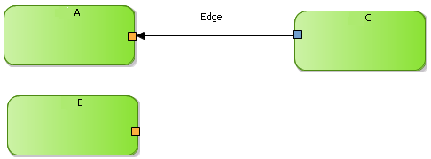
After the reconnection:
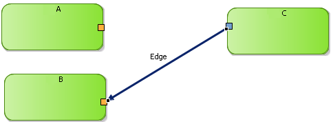
sourceView is the graphical node ‹A›.
targetView is the graphical node ‹B›.
otherEnd is the graphical node ‹C›, that has not changed during the reconnection.
edgeView.sourceNode is the graphical node ‹C›.
edgeView.targetNode is the graphical node ‹B›.
For the semantic, we will consider that we represent «Box» and the link means «is contained in»:
source is the box ‹A›.
target is the box ‹B›.
element is the link «is contained» between ‹C› and ‹A›.
Decorations can be used to add small graphical annotations to the elements of a diagram. They are defined directly inside a layer, and they can be either Mapping Based Decorations or Semantic Based Decorations. Both have a name, a Position which indicate where the decorator should be place relative to its target element, and a Decorator Path, which should point to a small icon to use as decorator.
Mapping Based Decorations have a list of Mappings to which they may apply, while Semantic Based Decoration have a Domain Class and will apply to all graphical elements which have an instance of this class as their semantic element, whatever are the mapping(s) used to represent them.
The Precondition Expression is evaluated in the context of a candidate semantic element (as selected by either the Mappings or Domain Class property, and if the expression returns true, the decorator will be shown as the specified location on top of the graphical element’s shape.
Styles define the graphical appearance of diagram elements. Sirius supports a rich set of possible styles, including conditional styles which can dynamically change depending on the current state of the underlying model elements. Each mapping must define at least one style do be visible on the diagram.
Conditional styles make it possible to support different graphical aspects for a single mapping. The actual style used to render an element is determined dynamically depending on the current state of the models elements.
To use conditional style, you must first create a non-conditional style, which will be the default. You can then add one or several conditional styles as siblings to the default style. Each conditional style is associated to a condition specified as a predicate. If there are conditional styles on a mapping, their conditions are tested in their order of appearance in the mapping description. The first one for which the condition is true is selected. If none of the conditional styles condition is true, the default style is used instead.
if a user customized a Node with a WorkspaceImage style (through the «Set style to workspace image» action), then if a new style is computed through the VSM (e.g. through a Conditional Style appliance), this new style will not override the WorkspaceImage style to preserve this last customization (See Style Customizations ).
One of the responsibility of styles is to describe labels which will be displayed and how they will be formated. The following properties are available :
While not strictly part of the label properties, a Tooltip Expression can be set for most style, and is used to compute the text of the optional tool-tip shown when the user leaves the mouse on an element. It can be seen as an alternate Label Expression which is not visible by default, and can be used to show additional details on an element only when the user requests them, to avoid visual clutter on the diagram.
Most styles give you some control on the size of the graphical elements. The properties described below are not available for all styles, but when they are they have the same meaning (unless specified for special cases):
Whenever you have to specify colors for a style, you can use either one of the pre-defined system colors or one which you have defined yourself in a Users Color Palette. The palette is created directly inside the Viewpoint element, and its colors can be used by any representation, not just diagram. See the general section on colors for more details.
Tools are used to define the behavior of your modeler. Some tools will appear in the diagram’s palette (e.g. a tool to create a new node), while others are automatically invoked when the user performs certain operations (e.g. a delete tool which is triggered when the user deletes an element from the diagram).
Tools are defined in Tool Sections, which appear directly inside layers. If a tool is defined inside an additional layer, it will be enabled only when the corresponding layer is enabled.
The top-level Tool Sections inside a layer are simply used to separate tools definition from mapping definitions and have no impact on how the tools are presented. However, if you create sub-sections inside those top-level section ( New Tool... > Section), and if those sections contain tools which appear in the palette, then the sub-sections will be used to group the corresponding tools in expansible sections in the palette. You can also create Groups ( New Tools... > Group), which behave like combo-boxes in the palette: only one of the tools defined inside the group is active (and visible) at a time.
Tool sections can have Reused Tools, which are defined elsewhere (including in another layer, even from a different representation). They will appear and behave as if they were defined inside the section which reuses them.
The Group Extension elements (defined inside a tool section) allow you to add tools in a existing Group defined elsewhere. It can be used for example to merge tools defined in an additional layer into a group of tools defined in the default layer. You must select the existing Group to extend, and any tool declared in a group extension will be added in the targeted group by the ‹group› attribute.
WARNING : It was possible to define a ToolSection directly under a DiagramDescription, outside a layer. Defining tool section outside a layer is discouraged, that’s why this action has been deleted. The tool sections created before are still present but you should move it into the default layer since it is likely to be deleted in the future.
In this section we describe each kind of tool available on a diagram.
See the description in the node-specific tools section.
See the description in the container-specific tools section.
See the description in the edge-specific tools section.
See the description in the container-specific tools section.
See the description in the edge-specific tools section.
The paste tool aims to define operations to paste the given copied semantic element, accessible through the copiedElement variable, into the semantic paste receiver, accessible through the container variable. The copiedView and containerView variables reference the corresponding graphical element. The Containers property indicates the mappings to which this tool apply.
Its semantic target is the copied semantic element. If the copied element was a non domain based element (e.g. relation edge), the semantic element is the original except if it is targeted by a domain based element also selected. When the semantic target is not copied, the tool receive a null copied element.
Warning: The generic behavior is used only when there is no tool defined on the paste receiver. Otherwise the first tool with a precondition evaluated as true will be chosen and if all defined tools have a false precondition, paste action will be disabled.
If you do not associate a Delete tool to a mapping, the default delete behavior when the user deletes a graphical element is to remove the target semantic element and all the associated semantic elements from the semantic model. If you want a different behavior or if you want to forbid the deletion of some elements, you must set an explicit Delete tool. Delete tools are invoked when the user select the Delete from model action (from the context menu, from the tab-bar or using the Delete key). The element variable will be set to the main semantic target element being deleted (excluding any associated semantic elements) while the elementView and containerView tell you which graphical view is being deleted and in which context it is.
If you want to completely disable deletion for some elements, you can either create a Delete tool which does nothing for these elements or, if possible, setup the tool’s Precondition to return false for these elements. Setting a precondition is usually preferred as it will mark the Delete action as disabled in the UI (tab-bar and context menu) while a tool which simply does nothing can still be invoked by users, but with no effect. Note however that the Precondition will be evaluated each time the user selects and element to decide whether or not the delete action should be enabled in the UI. A precondition which is complex to evaluate can have a negative impact on the perceived performance of the modeler.
The Direct Edit Label tool is used to allow users to directly edit the label of a representation element. It specifies how to interpret the new label value, and which changes to apply to the model element. Users can invoke it using the F2 shortcut, through a slow double-click, or directly by starting to type some text when a label is selected.
If you want to display a different label during the edition, you can use the
input label expression. This expression is evaluated during the invocation of the direct edit and displayed to the end-user instead of the standard label (defined in the style of the mapping).
For example, you can display a class with a stereotype,
<<utility>> Math, and display only the class name,
Math, during the edition.
Inside a
Direct Edit Label tool, you
must specify an
Edit Mask Variable element. The mask is used to parse the new label’s value as entered by the user, and to select part of this label as input variables to the editing action’s body. The mask can contain substrings of the form {N} where
N is a number. The parts of the new label’s value which corresponds to these substring will be available as variables name
argN (strings) in the body of the direct edit action. The default mask is {0}, which means the whole text entered by the user will be available through the variable
arg0.
Note: Edges can have up to three different labels (one in the center and one at each extremity), but currently if a Direct Edit tool is associated to an Edge mapping, only the center label (if it exists) can be edited. This restriction will probably be lifted in future versions.
This tool can be used to open a wizard dialog asking the user to select one or several model elements. The body of the tool is then executed in the context of the element selected by the user.
When the tool is selected, the user must first select a diagram element as the tool’s target. Then a dialog box opens with a list of candidate elements to select. The list is computed from the target using expressions you specify in the tool’s description.
The Window Title, Icon Path, Windows Image Path and Message can be used to customize the look of the selection window.
The Candidates Expression should return a list of elements from which the user can select the variable’s value. By default these candidates are presented as a list. You can also enable the Tree mode, and specify a Children Expression, which will be evaluated recursively on each candidate to build a tree of possible values. Finally, you can set the Multiple flag to allow users to select several of the candidates instead of a single one.
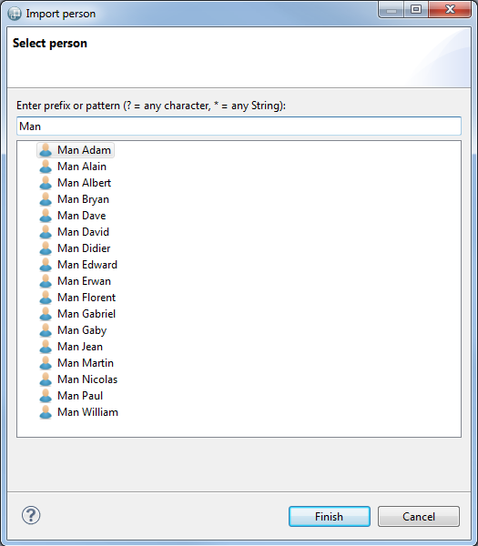
The Pane-Based Selection Wizard is very similar to the Selection Wizard. It differs only in the presentation of the selection window. The pane-based wizard offers two panels: on the left are all the candidates, which corresponds to the contents of the basic Selection Wizard. On the right is the current selection. The user has buttons to add or remove candidates from the left panel into the right one. The Pre Selected Candidates Expression can be used to define the initial content of the right-side panel.
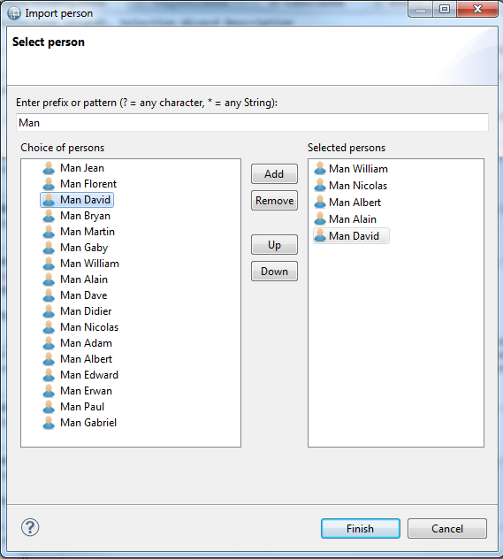
Each dialect supported by Sirius defines a tool which can be used to create a new representation using this dialect. They are (using the default supported dialects): Diagram Creation description, Table Creation description and Tree Creation description.
These tools (one for each kind of representation supported by Sirius) can be used to create (and open) a new representation from an existing diagram element. They will be available to end-users in the Navigate context menu on compatible diagram elements. To configure the tool, simply select in the Mappings property which kinds of elements the tool should appear on (you can be more precise using the Precondition expression if necessary), and select the representation which should be created using the Representation Description property (in practice, one of Diagram Description, Table Description or Tree Description depending on the tool). Normally, the new representation will be created on the semantic element represented by the diagram element on which the user invoked the tool. Sometimes you want the tool to appear on one element, but create a representation on another one. In this case, use the Browse expression (in the Advanced category) to navigate from the element selected to the one one which the new representation should actually be created. The Title Expression ( Advanced category) can be used to set the title of the newly created representation. Finally, any operation you specify in the body of the tool will be executed when the tool is invoked; you can use it to initialize the content of the model represented.
Each dialect supported by Sirius defines a tool which can be used to navigate to existing representation of this dialect. They are (using the default supported dialects): Diagram Navigation description, Table Navigation description and Tree Navigation description.
These tools are very similar to the representation creation tools. The only differences is that they allow users to navigate to existing representation instead of creating new ones. If such a tool exists, the Navigate context menu on an element will contains an entry for each corresponding representation which already exists on the element selected (or reachable from the selected element using the Browse expression). You can specify a Navigation name expression ( Advanced category) to be used in the menu entry instead of using the title of the existing representation. This can be useful to make it more explicit what the relationship is between the current element and the target tree.
This tool is used to trigger operations when the user double-clicks on an element. The Mappings property indicate for what kinds of element this tool is applicable.
Inside the body of the tool, the elementView variable refers to the graphical element the user double-clicked on, while the element variable represents its semantic target element.
This generic tool is used to provide a palette entry which can execute any code describe in the internal tool language, including for example invoking external Java actions.
Inside the body of the tool, the elementView variable refers to the graphical element the user invoked the tool on, while the element variable represents its semantic target element.
This tool can be used to define an entry in the context menu which can contain Operation Actions and External Java Action tools. Which ones are visible when the menu is opened depend on the preconditions of these actions, which can thus be activated or not depending on the currently selected element.
This tool can be used to define an operation which will appear as an entry in the context menu (or in a sub-menu if defined inside a Popup Menu element). When invoked, the body of the action is executed with the views variable referencing all the representation elements which were selected on the diagram.
The External Java Action tool simply creates a menu entry in the context menu which directly invokes any External Java Action you can define.
This tool is for advanced uses only. It requires understanding and extending GMF, the graphical framework used by Sirius to display diagrams. A Request description tool will contribute an item in the palette, and when invoked on a graphical element it will send a GMF request to the corresponding edit part. The type of the request to send is specified as a fixed string in the Type property. The target edit part should have an edit policy capable of understanding and reacting to the request.
A diagram can define any number of filters, which can be enabled or disabled dynamically by the user to show or hide some elements of a diagram. Filters differ from layers on three main points:
To add a filter to a diagram, create a Composite Filter inside the Diagram Description element, specify its Name (a fixed string), and add one or several Mapping Filter or Variable Filter elements inside of it.
A mapping filter applies to all the elements instance of some mappings, and can filter some of them according to configurable conditions.
The
Filter Kind attribute of a
Mapping Filter can be
HIDE, which will completely remove the element from view, or
COLLAPSE which will minimize its size to a small transparent square of 4-by-4 pixels. The collapse mode is useful because the edges which use the filtered element as a source or target are still visible when the element is collapsed, while they disappear when the element is hidden.
The Mappings property indicates the list of mappings to which the filter will apply.
The Semantic Condition Expression will be evaluated in the context of the target semantic elements of each instances of the specified mapping. It should return true if the element should be kept visible, and false if it should be hidden/collapsed.
The View Condition Expression is similar to the Semantic Condition Expression, but is evaluated on the context of the view element of each instance of the specified mapping. The view element is the model element used by Sirius to represent the graphical element. Using these expressions require some knowledge of the structure of the view model used by Sirius.
Both expressions are optional. If none is specified, the filter will have no effect. If both are specified, only the elements for which both expressions return false will be hidden/collapsed.
The expressions of all active filters are evaluated whenever the diagram is refreshed (in the default Auto-refresh mode, whenever a change occurs in the semantic model), not just when the user enables the filter. This means that the active filters can have a big impact on performance if they perform complex tests, so keep this in mind when writing the condition expressions.
A Variable Filter is similar to a Mapping Filter, except that instead of using a list of mappings to select the candidate elements to filter, it opens a dialog box from which the user can select the specific elements he wants to filter. The configuration of the dialog box uses the same properties and semantic as the Selection Wizard tool. Refer to its documentation for the details.
A diagram description can define custom validation rules which will only be applied when launching a validation on an instance of this diagram (using the Validate operation in the context menu). To define validation rules you must first create a Validation element inside the diagram, and then add one or more Semantic Validation Rule or View Validation Rule. Both kinds of rules are similar, but semantic rules check the structure of the underlying semantic model which view validation rules can check the structure of the representation itself. When a rule is violated, a marker will appear on the diagram on the problematic elements and in the Problems view.
Each rule has a Level, which represents its severity when it is violated. It can be Information, Warning or Error. It also has a computed Message expression (evaluated in the context of the checked element) to provide the user an explanation of the problem detected. Semantic validation rules must specify Target Class, and will be checked on all the instances of that class in the semantic model. View validation rules have instead of a list of Targets which are the mappings it applies to.
Inside a rule you must define one or more Audit, which perform the actual checks using an Audit Expression. The expression will be evaluated on each (semantic or graphical) element to check, and must return false if the rule is violated. If a rule contains several audits, it is triggered if at least one of them detects an issue.
You may also define one or more Fixes inside a rule. When a rule is violated, if it defines fixes they will be available to the end-users in the context menu of the corresponding marker. Each fix has a name and a body. The body is defined in the same way as the body of a tool, using any of the available model operations. It should perform any required change in the model to fix the issue detected by the validation rule, if possible.
Sirius has specific support for extending and refining diagram descriptions and mappings without modifying the original. The extensions are applied transparently when the viewpoint they are defined in are enabled, and removed when the viewpoint is disabled.
For example, if a base viewpoint V1 defines a diagram description D, you can define a separate viewpoint V2 (maybe even from inside a different plug-in, you do not need access to the source of V1) and in V2 define an extension DE to D. When users enable only V1, they see D as defined in V1. When they enable both V1 and V2, D is automatically extended by DE.
Note that a given diagram type can be extended by multiple extensions at the same time. However if several extensions try to redefine elements defined in the base diagram (instead of just adding new elements), the result is not specified.
A Diagram Extension is defined directly inside a Viewpoint element, and it must specify precisely which diagram description it extends using the Viewpoint URI and Representation Name properties (the Name property is the name of the extension itself).
The
Viewpoint URI indicates in which viewpoint the extended diagram is defined. It has the following syntax:
viewpoint:/pluginId/ViewpointName, where
pluginId is the identifier of the Eclipse plug-in in which the viewpoint is defined, and
ViewpointName is the name of the viewpoint. Note that the name must be unique among all the viewpoints defined in all the VSMs contributed by that plug-in.
The Representation Name is simply the identifier ( Id field) of the diagram to extend, which is defined inside the specified viewpoint.
A Diagram Extension can specify the Metamodels of the semantic elements it represents if it supports types of elements which were not represented in the extended diagram. Inside a Diagram Extension, you can define validation rules, filters and additional layers. When the extension is enabled (i.e. when both the viewpoint it is defined in and the one it extends are enabled), the elements defined in the extension will be merged (added) into the base diagram’s definition as if they had been defined directly in the base diagram.
The simplest use case of a diagram extension is to simply augment the base diagram with new graphical elements, tools, filters and validation rules. However you can also use the notion of Mapping Import to modify the definition of some of the base diagram’s mappings. Mapping Imports are actually independent of diagram extensions, and can be used inside a normal diagram description as their semantic is defined in terms of layers activation, but their main use case is when using diagram extensions.
You can use regular expression in
Viewpoint URI and
Representation Name fields. This allows to extend several diagrams with one single
Diagram Extension. You should use regular expressions only to define a
Diagram Extension that contains only
style customization.
These fields are considered as regular expressions if they contain at least one of these characters : «*», «[», «]», «(», «)» or «?».
A mapping import is used to specialize (modify) a mapping defined somewhere else (in an other layer, an other graphical representation or an other viewpoint). This feature is only available for diagram kind representations.
For example, if a layer L1 defines a mapping M1 and an other layer L2 defines a mapping import M2 which imports M1, then M2 may override/overload some of the features of M1 like a more specific «Semantic Candidate Expression» or a conditional style taking into account other specific aspects. When only L1 is activated the normal definition of M1 is applied. If L2 is also activated, M2 is applied instead of M1, the overloaded features in M2 replace the ones of M1 and the new defined features or sub-elements are added.
You can define Node Mapping Imports, Container Mapping Imports or Edge Mapping Imports. They all behave in the same way. For each one you must specify the Imported Mapping (typically from another layer defined in a diagram you are extending or in the same diagram). Mapping imports have all the properties of normal mappings, but when you set an explicit value for a property in a mapping import:
Two parameters which are specific to import mappings can change this last behavior:
Diagram elements support conditional styles, which can be used to completely change the appearance of an element depending on some arbitrary condition. However, defining a complete conditional style can be cumbersome when you just want to customize a specific aspect of the element’s style (for example a single color). A more fine grained customization of styles is possible using Style Customization elements.
To use this feature, you must first create a Style Customizations element inside a layer (from the New Customization... context sub-menu). Only one such element can exist in a layer, and it serves as a container for all style customizations the layer defines. Inside a Style Customizations you can define any number of individual Style Customization elements, each of which re-groups a set of actual customizations which can be either an Property Customization (by expression) or a Property Customization (by selection). Both kinds work on the same principle, and you must define:
A Style Customization can define a predicate expression to control whether or not it should apply. If defined, the expression is evaluated in the context of a semantic element to determine whether or not the customizations should be applied. If no expression is defined, the customizations will apply. If a Style Customization applies to a given element, the base style that the element would normally have will be modified by applying all the Property Customization (by expression and by reference) defined in the Style Customization , if they are compatible with that base style.
A Style Customizations group can also contain Style Customization Reuse elements. These can be used to reuse customizations defined elsewhere in a different context (specified using the Reuse property), and apply them to other elements (specified using the Applied On property). They will behave as if they had been defined locally inside a Style Customization with no precondition.